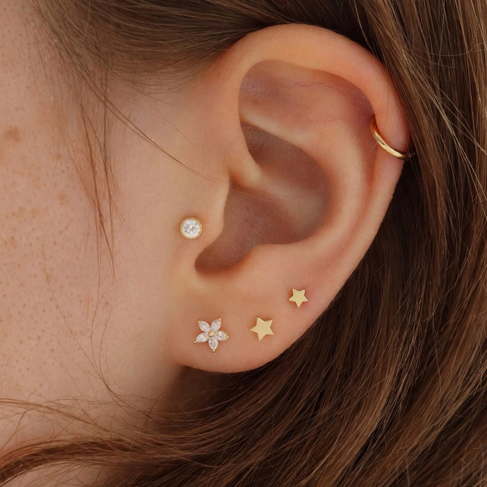
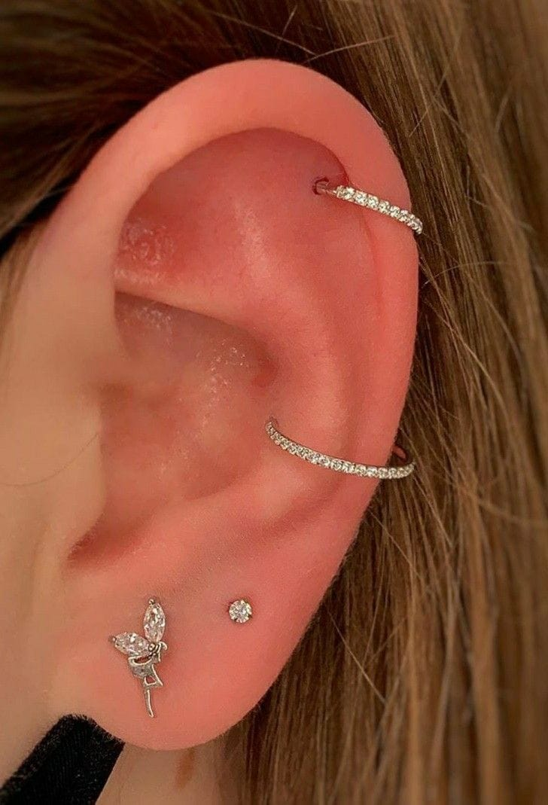
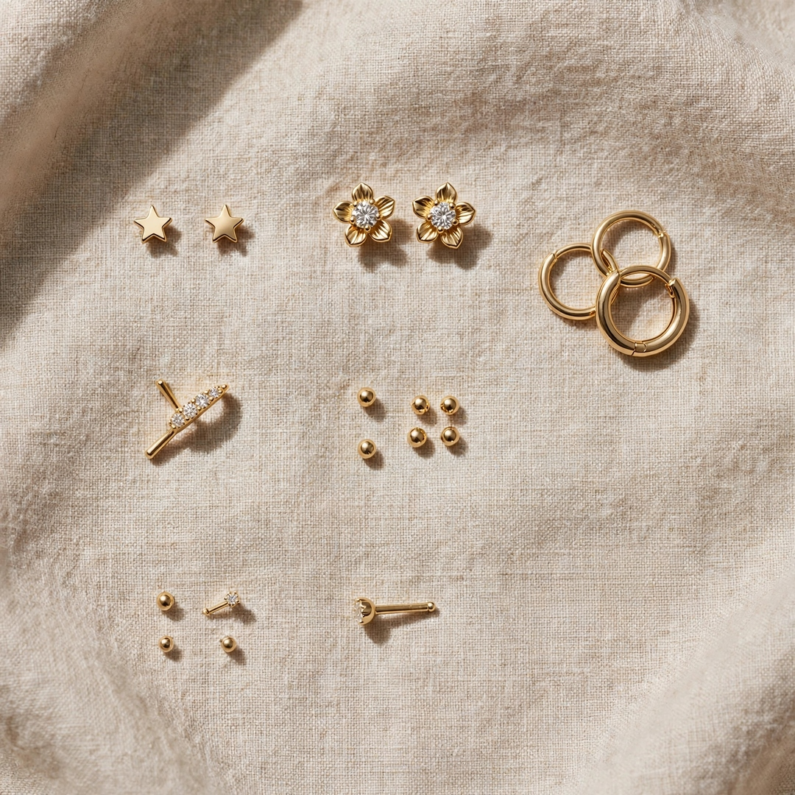

Técnica de Enfermagem
Atendimento realizado por uma profissional Técnica de Enfermagem, com atenção aos cuidados de biossegurança.
Uma experiência mais acolhedora para bebês, crianças e adultos, com atenção à biossegurança e ao cuidado em cada etapa do atendimento.
Atendimento domiciliar em Porto Alegre e Canoas.
O furo humanizado une técnica, acolhimento e atenção para tornar esse momento mais tranquilo.
Atendimento realizado por uma profissional Técnica de Enfermagem, com atenção aos cuidados de biossegurança.
Joias em materiais escolhidos para oferecer conforto e segurança, incluindo opções em titânio.
Você recebe o atendimento no conforto da sua casa, em Porto Alegre e Canoas.
Orientações e cuidados para acompanhar corretamente o período após o procedimento.
Elaine Maidana é Técnica de Enfermagem especializada em Furo Humanizado, oferecendo uma experiência acolhedora, delicada e cuidadosa.
O atendimento é realizado em domicílio, com atenção à biossegurança, materiais estéreis e descartáveis e orientações para os cuidados após o furo.
Do primeiro furinho aos projetos de orelha, cada atendimento é pensado de forma individual.
Uma experiência acolhedora para o primeiro furinho dos pequenos.

Planejamento personalizado para criar uma composição harmoniosa e delicada.

Hélix, tragus, conch, daith, rook e outras possibilidades.

Opções de joias para diferentes estilos e projetos de orelha.
O atendimento é realizado com atenção às práticas de biossegurança e aos materiais utilizados durante o procedimento.
Entre as opções disponíveis estão joias em titânio biocompatível, além de outras possibilidades conforme o projeto.
Algumas possibilidades para complementar seu projeto de orelha.


Conheça os trabalhos realizados por Elaine.
Entre em contato pelo WhatsApp para conversar sobre seu atendimento.
O atendimento acontece no conforto da sua casa.
O furo é realizado com cuidado e atenção.
Você recebe orientações para os cuidados necessários.
Elaine realiza atendimento domiciliar em Porto Alegre e Canoas.
O atendimento é realizado no conforto da sua casa.
Porto Alegre e Canoas.
A percepção pode variar de pessoa para pessoa. A proposta do atendimento humanizado é tornar a experiência mais acolhedora e tranquila.
A indicação depende da idade, condições individuais e avaliação adequada para cada atendimento.
O titânio é utilizado em joias corporais por suas características de biocompatibilidade. A escolha da joia deve considerar o procedimento e a orientação profissional.
Durante a cicatrização, é recomendado seguir as orientações de cuidados fornecidas após o procedimento.
Sim. Elaine realiza atendimento domiciliar em Porto Alegre e Canoas.
Agende seu atendimento com Elaine Maidana e conheça a experiência do Furo Humanizado.
Agendar pelo WhatsApp